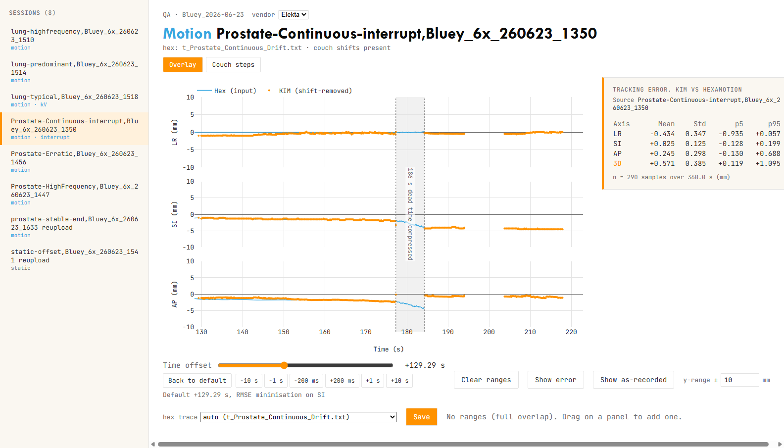

A desktop tool for checking KIM real-time tracking against a known trajectory. Point it at a results folder; it overlays KIM's reported marker positions on the programmed HexaMotion robot trace, aligns the two time series, and reports the per-axis deviation that decides whether a session passes.
One axis of an overlay: the cyan line is the trajectory the robot was told to play; the orange dots are where KIM said the marker was. The gap between them is the tracking error.
The robotic phantom plays a programmed motion trace while KIM tracks the implanted markers. Because the input trajectory is known, KIM's reported positions can be compared against ground truth directly. The app time-aligns the two series by minimising RMSE (with an optional manual offset), then computes the residual deviation per axis. It handles three kinds of session, and classifies each one automatically from the folder contents.
A stationary marker against the expected centroid position. Checks KIM's absolute localisation with no motion in play, reporting the offset per axis.
Reports mean offset and spread per axisKIM tracking against a known ground truth — a HexaMotion or robot trace, or a baseline KIM acquisition — RMSE-aligned in time on the most active axis. Reports the per-axis deviation (mean, SD, 5th and 95th percentiles) and a pass/fail verdict.
Pass: |mean| ≤ 1 mm and SD ≤ 2 mmA multi-segment acquisition stitched with the couch corrections applied between segments. Dead time compresses visually, and a ghost overlay shows the uncorrected, no-intervention trace for comparison.
Vendor-signed couch shifts, per axisThe app is a Windows executable that serves a local browser UI. There is no install and no Python to set up. Point it at a results root and every session under it appears in the sidebar, classified and ready to review.

Three stacked LR/SI/AP panels, KIM detections over the input trace. Auto-fit the time offset by RMSE or nudge it by hand, drag on a panel to select an analysis window, and read live per-axis metrics (mean, SD, 5th and 95th percentiles, plus 3D) as you adjust. Switch to residual mode to see the error directly.
Pick any ground truth from the dropdown: a HexaMotion trace, a robot file, or a
baseline KIM acquisition from a Baselines folder — ideal for
comparing a new tracking-software version against a known-good run. Same-fraction
replays can be aligned exactly with one click via the shared gantry angle
(gantry remap), and when a session holds several logs, a test trace
picker chooses which one is under review.
Where a KIM-KV folder is present, hovering a detection shows the actual
kV crop behind it, with a crosshair and the detected-marker ring, so you can check what
KIM was looking at when a point drifts.
Save writes overlay.png into the session folder, persists your tuned
offsets and analysis ranges to _overlay_state.json, and regenerates a
combined summary.md at the root with per-axis and 3D statistics for every
reviewed session.
Download KIM-QA-Analysis-Windows.zip
(release notes) and extract
it anywhere. Everything ships inside KIM-QA-Server.exe; no installer, no
Python.
Double-click KIM-QA-Server.exe and pick the results folder in the dialog,
or run KIM-QA-Server.exe --root "D:\KIM\2026-06-23" from a terminal. Add
--vendor Varian for Varian machines. Your browser opens the app
automatically.
Sessions appear in the sidebar, classified as static, motion, or interrupt. Motion traces auto-match by folder name; refine the alignment with the offset slider, drag to select an analysis window, and hover points to see the kV frame behind each detection.
Save writes the overlay image and the tuned state into the session, and regenerates the
root-level summary.md with the per-axis and 3D tracking-error statistics for
every reviewed session.
The app parses standard KIM session folders live; nothing needs pre-processing. Point it at
one results root containing a folder per session, with the ground-truth traces in a
Motion traces folder alongside them:
D:\KIM\2026-06-23\ ← the results root you pick at launch ├─ PHANTOM_ROBOT_Centroid.txt ← shared centroid file (a session-local copy overrides it) ├─ Motion traces\ ← ground-truth traces (any nesting inside) │ └─ hexamotion-prostate\t_Prostate_Continuous_Drift.txt ├─ Baselines\ ← baseline KIM acquisitions (ground truth for version QA) │ └─ 2026_06_17-pat03\MarkerLocationsGA_CouchShift_0.txt ├─ Prostate-Continuous-interrupt, ...\ ← one folder per session; the name picks the trace │ ├─ MarkerLocationsGA_CouchShift_0.txt primary log: positions + gantry (_1, _2, ... after interrupts) │ ├─ MarkerLocations_CouchShift_0.txt fallback when the GA log is absent │ ├─ couchShifts.txt optional — interrupt sessions │ ├─ KIM-KV\ optional — kV frames for hover preview │ └─ kim-log-pdf480\ optional — extra KIM log, overlaid as a toggle └─ lung-typical, ...\
Session folder names drive the automatic trace match: a name containing e.g.
prostate + erratic is matched (case-insensitively) to
t_Prostate_Erratic.txt, searched anywhere under Motion traces;
unmatched folders open as static until a ground truth is picked in the app — nothing
requires the naming convention. A different traces location can be given with
--traces-root, and a different baselines location with
--baselines-root.
MarkerLocationsGA_CouchShift_*.txtcouchShifts.txtOptional--vendor setting.KIM-KV/OptionalMotion traces/Motion sessions*.txt inside is selectable
from the app's ground-truth dropdown, with the format auto-detected: a 3-column HexaMotion
trajectory (implicit 20 ms step) or a robot file with explicit timestamps (whitespace or
comma-delimited).Baselines/<name>/Optional*centroid*.txtOptionalA browser-based visualisation of kV imaging geometry: depth-dependent magnification, geometric penumbra, and how target motion appears on the detector at different gantry angles. Adjustable SAD, SID, focal spot, gantry angle, and target translation. Useful for teaching and for reasoning about what a detection on a projection actually represents.